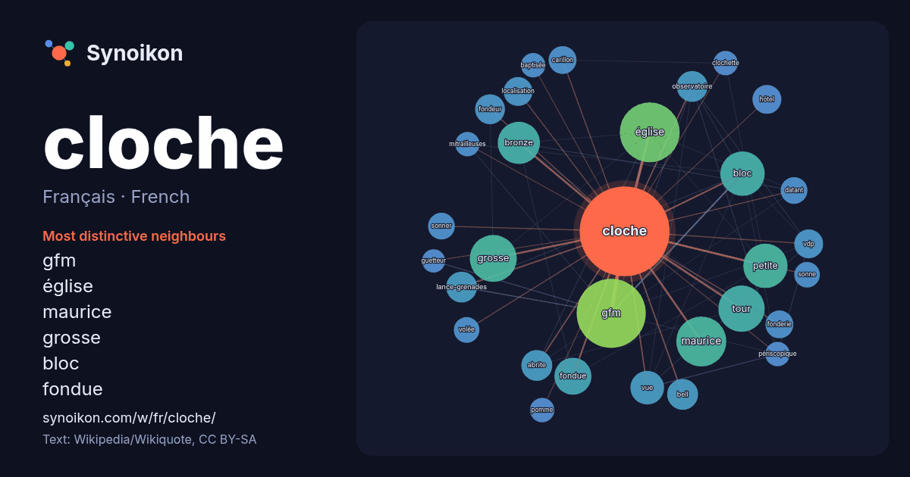

Français · French · word of the day list
cloche
“bell” · The words found around it in 1313 instances from French Wikipedia, Wikiquote.

Most distinctive neighbours
- gfm 81×
- église 34×
- maurice 33×
- grosse 33×
- bloc 30×
- fondue 24×
- bronze 23×
- petite 19×
- lance-grenades 17×
- observatoire 16×
- bell 16×
- fondeur 16×
- vdp 15×
- abrite 14×
- carillon 14×
- fonderie 14×
- sonner 13×
- hôtel 13×
- vue 12×
- localisation 12×
× = how many times more often than in general French Wikipedia text.
Most frequent neighbours
- gfm 80
- église 60
- maurice 42
- grosse 37
- tour 36
- bloc 33
- petite 33
- bronze 30
- fondue 23
- vue 19
- maison 18
- modèle 18
- nom 18
- abrite 16
- bell 16
- lance-grenades 16
- observatoire 16
- ancienne 15
- fondeur 15
- france 15
In context
- Pour les articles homonymes, voir Cloche (homonymie). Une cloche (« du bas latin clocca, attesté en l'an 550 dans le domaine anglais et importé sur le Wikipedia snippets · Cloche
- avec « l'esprit de clocher » maintes expressions populaires : sonner les cloches, à la cloche de bois, être fêlé comme une cloche. Les progrès de l'horlogerie Wikipedia snippets · Clocher
- Pour les articles homonymes, voir Cloche (homonymie). Maurice Cloche Maurice Cloche, né le 17 juin 1907 à Commercy et mort le 20 mars 1990 à Bordeaux Wikipedia snippets · Maurice Cloche
- Grosse cloche de Bordeaux La Grosse cloche vue du sud en 2012. La Grosse cloche de Bordeaux est le surnom donné à un édifice qui servait de porte du rempart Wikipedia snippets · Grosse cloche de Bordeaux
- Pour les articles homonymes, voir Cloche (homonymie). Une cloche guetteur et fusil-mitrailleur (cloche GFM) est un équipement installé sur les fortifications Wikipedia snippets · Cloche GFM
- projets Wikimedia : cloche, sur le Wiktionnaire Cette page est la page d'homonymie de Cloche, La Cloche, Cloches et Les Cloches. Une cloche est un objet destiné Wikipedia snippets · Cloche (homonymie)
- Pour les articles homonymes, voir Cloche (homonymie). Une cloche observatoire est un équipement blindé installé sur certaines fortifications, à partir Wikipedia snippets · Cloche observatoire
- homonymes, voir Cloche (homonymie). La Cloche Tibétaine Cloche rituelle tibétaine modifier - modifier le code - voir Wikidata (aide) La Cloche Tibétaine (Die Wikipedia snippets · La Cloche tibétaine
More French words
- art
- automne
- carte
- chanson
- chat
- chemin
- cheval
- chien
- climat
- cœur
- dieu
- désert
- eau
- famille
- forêt
- histoire
- hiver
- horloge
- jardin
- langue
- miel
- miroir
- monnaie
- montagne
- mort
- mère
- nature
- nourriture
- ombre
- pain
- pluie
- pont
- pouvoir
- printemps
- santé
- science
- sel
- silence
- temps
- tempête
- thé
- train
- travail
- trésor
- vie
- ville
- vérité
- étoile
- île
Precomputed on 2026-10-09 with default settings (±5 words, medium corpus). The interactive map can refresh it with live data.